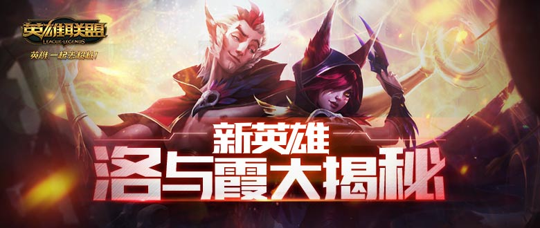

洛最擅长的就是分散敌人的注意力，领着他的对手们踏出死亡的舞步。霞能够利用锐切快速地清理兵线。
首先看看女英雄的，没说的女英雄-霞颜值很高，技能也是很酷炫，又是一个超秀的英雄!首先是被动 切割之羽在施放技能過後，莎雅的下三次普攻會穿越路径上所有目标并在路径后方留下羽毛，持续8 秒首先看看女英雄的，没说的女英雄-霞颜值很高，技能也是很酷炫，又是一个超秀的英雄!首先是被动 切割之羽在施放技能過後，莎雅的下三次普攻會穿越路径上所有目标并在路径后方留下羽毛，持续8 秒首先看看女英雄的，没说的女英雄-霞颜值很高，技能也是很酷炫，又是一个超秀的英雄!首先是被动 切割之羽在施放技能過後，莎雅的下三次普攻會穿越路径上所有目标并在路径后方留下羽毛，持续8 秒首先看看女英雄的，没说的女英雄-霞颜值很高，技能也是很酷炫，又是一个超秀的英雄!首先是被动 切割之羽在施放技能過後，莎雅的下三次普攻會穿越路径上所有目标并在路径后方留下羽毛，持续8 秒